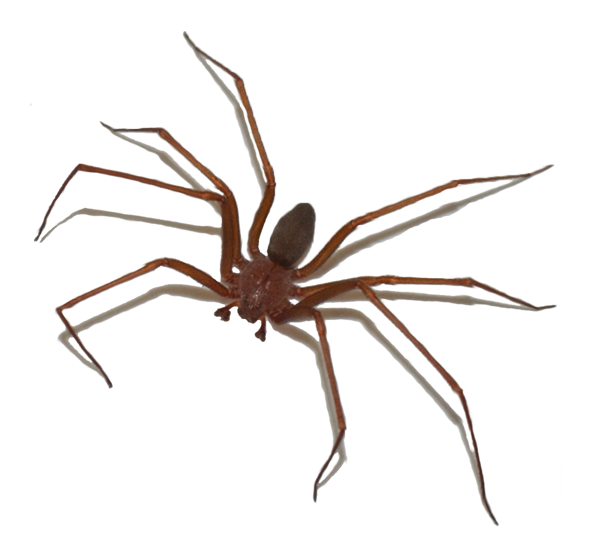

Me formei em Ciências Biológicas na UFPR em 2018, nas modalidade Bacharel e Licenciatura.
Nunca fui aquela Bióloga de campo, desde o primeiro ano a iniciação científica entrei em pesquisas
em laboratório. E quando conheci a Toxicologia foi amor a primeira vista.
Fiz o mestrado e o doutorado também nessa área, trabalhando com toxinas do veneno
da aranha-marrom. Consegui aprender diversas técnicas de clonagem, expressão e
purificação de proteínas, imunofluorescência. Uma amiga me disse que nós que
trabalhamos com resultados de experimentos já somos Cientistas de Dados. E eu acreditei.
Comecei uma graduação em Ciências de dados e assumo que essa área me cativou. A Biologia e
a TI não são parentes tão distantes como eu imaginei, pelo contrário. Hoje em dia tudo que
aprendo na TI tento reforçar aplicando no meu dia a dia, como construindo dashboards
informativos sobre aranha-marrom, tentando entender se os acidentes ocorrem com mais
frequência em um determinado período ou ano. Espero concluir a graduação em dados e
avançar cada vez mais nessa área.
